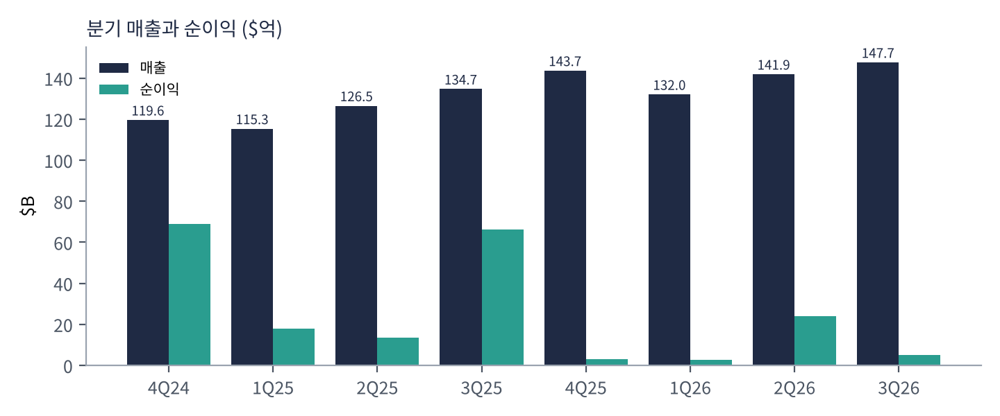
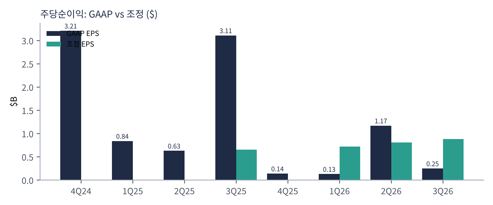
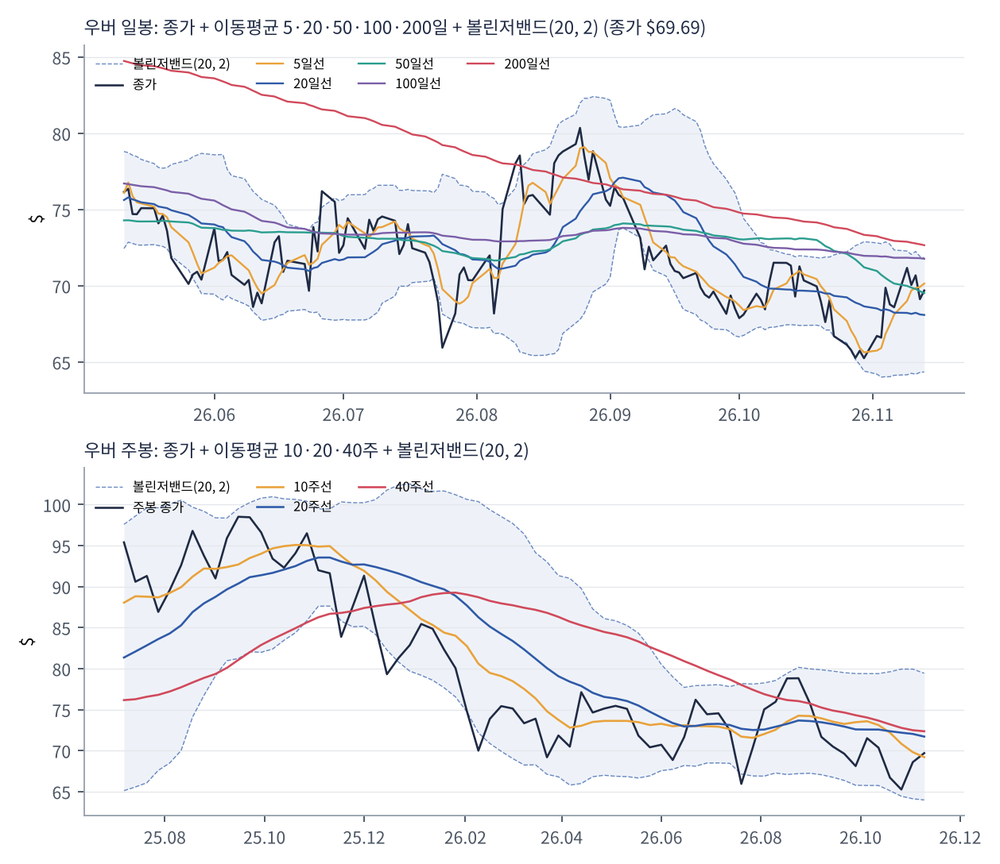
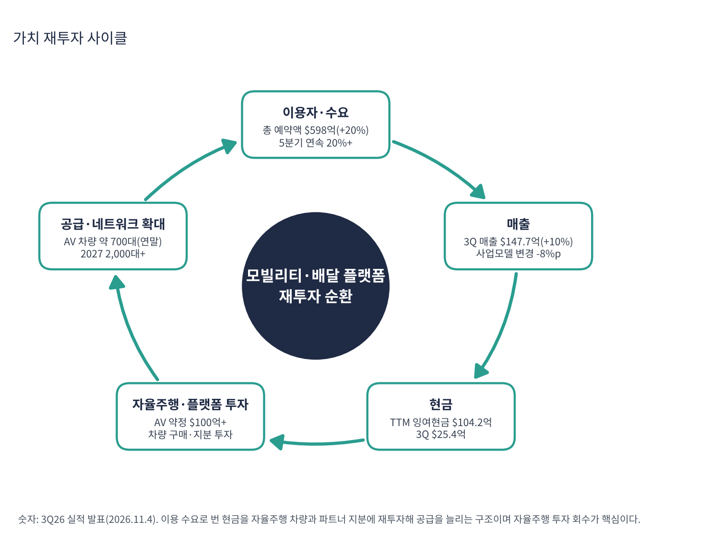

우버는 승차(Mobility), 배달(Delivery), 화물(Freight) 플랫폼을 운영하는 회사다. 5분기 연속 총 예약액 +20% 성장과 연 $104억 잉여현금이 있지만, 자율주행 투자 부담이 크고 GAAP 순이익이 지분 평가손익으로 크게 흔들리는 회사다. 주가는 $69.69다.
| 항목 | 내용 |
|---|---|
| 종목 | Uber Technologies (UBER) · NYSE · 소비재(플랫폼) · 캘리포니아 샌프란시스코 |
| 멀티플 | PER 41.3배 · PEG 산출 불가(GAAP) · P/S 2.51배 (11/13 종가 $69.69) |
| 최근 분기(3Q26) | 총 예약액 $598억(+20%), 매출 $147.7억(+10%), GAAP EPS $0.25, 비GAAP EPS $0.88(+35%) |
| 가이던스(4Q26) | 총 예약액 $632.5~652.5억, 조정 EBITDA $31.3~32.3억, 비GAAP EPS $0.95~0.99 |
| 현금·부채 | 회사 현금 약 $101억. 스캐너: 현금 $106.8억, 총차입금 $177.4억, TTM 잉여현금 $104.2억 |
| 직책 | 인물 | 역할·특징 |
|---|---|---|
| CEO | 다라 코스로샤히(Dara Khosrowshahi) | 자율주행 파트너 확대와 5분기 연속 20%+ 성장을 성과로 제시 |
| CFO | 발라지 크리슈나무르티(Balaji Krishnamurthy) | 비GAAP 영업이익 $23.0억(예약액의 3.9%)과 잉여현금을 설명 |
경영 스타일: '자율주행 차량 공급을 파트너와 함께 키워 플랫폼 수요를 채운다'. 자율주행 약정 $100억 이상(지분 약 $25억, 차량 구매 약 $75억)과 Lucid(지분 약 11.5%)·Rivian($12.5억, R2 최대 5만 대)·Nuro 제휴를 맺었다.
3Q 승차 $295억(+18%), 배달 $285억(+22%), 화물 $17.7억(+35%).
연말 약 700대, 2027년 2,000대 이상 자율주행 차량 운영을 목표로 한다(회사 설명).
다음 실적발표(4Q26)는 세 가지 질문에 답하는 자리다.
질문 1. 4Q 총 예약액과 조정 EBITDA가 가이던스 안인가?
| 확인할 숫자 | 좋아지면 | 나빠지면 |
|---|---|---|
| 4Q 가이던스: 총 예약액 $632.5~652.5억(+18~22%, 환율 중립), 조정 EBITDA $31.3~32.3억, 비GAAP EPS $0.95~0.99(+34~39%), 3Q 총 예약액 $598억(+20%) | 안이면 ②매출·③현금 고리가 이어진다 | 미달이면 5분기 연속 20%+ 성장이 꺾인다는 뜻이다 |
질문 2. 자율주행 투자가 계획대로 늘어나는가?
| 확인할 숫자 | 좋아지면 | 나빠지면 |
|---|---|---|
| 연말 자율주행 차량 약 700대, 2027년 2,000대 이상, 약정 $100억+(지분 약 $25억, 차량 구매 약 $75억), 샌프란시스코 Lucid·Nuro 출시 연말 계획 | 계획대로면 ④·⑤투자·공급 고리가 열린다 | 지연되면 투자 회수 시점이 밀린다 |
질문 3. 법적 준비금과 규제 비용이 줄어드는가?
| 확인할 숫자 | 좋아지면 | 나빠지면 |
|---|---|---|
| 3Q 법적·규제 준비금 $4.84억, 구조조정 $1.86억(비GAAP 제외), 파트너 Waymo의 피닉스 제휴 종료(2026.6.29) | 줄면 GAAP 이익이 비GAAP에 가까워진다 | 늘면 GAAP과 비GAAP 격차가 커진다 |
한 줄 판정 규칙: 첫 질문이 가이던스 안이고 자율주행 일정이 지켜지면 약한 고리(투자 회수)가 완화되고, 법적 비용이 늘면 이익 고리 부담이 커진다.
일정: 2027-02-10 예정으로 입력했으나 트레이딩뷰·회사 확정 일정은 확인 필요(통상 2월 초). 2027 가이던스는 같은 발표에서 나온다.
| 분기 | 매출 | 순이익 | EPS | 조정 EPS | 특이 사항 |
|---|---|---|---|---|---|
| 4Q24 | $119.6억 | $68.8억 | 3.21 | – | |
| 1Q25 | $115.3억 | $17.8억 | 0.84 | – | |
| 2Q25 | $126.5억 | $13.6억 | 0.63 | – | |
| 3Q25 | $134.7억 | $66.3억 | 3.11 | 0.65 | |
| 4Q25 | $143.7억 | $3.0억 | 0.14 | – | |
| 1Q26 | $132.0억 | $2.6억 | 0.13 | 0.72 | |
| 2Q26 | $141.9억 | $23.9억 | 1.17 | 0.81 | |
| 3Q26 | $147.7억 | $5.1억 | 0.25 | 0.88 | 3Q26 GAAP EPS에 지분 평가손실 $4.76억(세전) 포함 |


값은 트레이딩뷰 스캐너 분기 이력이다. 조정 EPS는 회사가 발표한 비GAAP EPS이며 트레이딩뷰 Reported에서는 2026년 3개 분기(1Q $0.72, 2Q $0.81, 3Q $0.88)와 3Q25 $0.65만 확인해 나머지는 '–'로 뒀다. 4Q24·3Q25의 GAAP 순이익은 세금 혜택·지분 평가이익 영향으로 크다(회사 설명 기준 확인 필요). 분기 설비투자는 구하지 못했다.
흐름 요약: 매출은 4Q24 $119.6억에서 3Q26 $147.7억으로 늘었다. GAAP 순이익은 세금 혜택·지분 평가손익 때문에 $2.6억~$68.8억으로 크게 변해 흐름을 읽기 어렵고, 비GAAP EPS는 3Q26 $0.88로 전년 $0.65 대비 +35%다.
| 항목 | 값 | 비고 |
|---|---|---|
| 3Q 승차(Mobility) 총 예약액 | $295억 | 전년비 +18% |
| 3Q 배달(Delivery) 총 예약액 | $285억 | 전년비 +22% |
| 3Q 화물(Freight) 총 예약액 | $17.7억 | 전년비 +35% |
| 3Q 매출 | $147.7억 | 전년비 +10%, 사업모델 변경 영향 -8%p |
| 3Q 비GAAP 영업이익 | $23.0억 | 총 예약액 대비 3.9% |
성장은 배달과 승차 모두에서 나온다. 총 예약액 성장 +20%에 비해 매출 성장이 +10%인 것은 일부 사업을 순액으로 인식하는 모델 변경 때문이다(회사 설명). 지역별·고객별 표는 이번에 구하지 못했다.
우버는 '이동과 배달 수요를 한 플랫폼에 모으고, 자율주행 차량 공급을 파트너와 함께 늘려 비용 구조를 낮추는 것'을 목표로 한다.
| 축 | 최근 움직임 |
|---|---|
| 수요 | 총 예약액 5분기 연속 +20% 이상 |
| 공급 | 자율주행 약 700대(연말) → 2,000대 이상(2027), 파트너 Nuro·Lucid·Rivian·Hertz 등 |
| 재무 | TTM 잉여현금 $104.2억, 비GAAP 영업이익 $23.0억 |

| 이동평균 | 값 | 종가 대비 | 해석 |
|---|---|---|---|
| 5일선 | $70.14 | -0.6% | 현재가가 아래 |
| 20일선 | $68.09 | +2.3% | 현재가가 위 |
| 50일선 | $69.52 | +0.2% | 현재가가 위 |
| 100일선 | $71.77 | -2.9% | 현재가가 아래 |
| 200일선 | $72.66 | -4.1% | 현재가가 아래 (-4%) |
주봉 흐름: 52주 고점 $94.06(11/13), 52주 저점 $64.04(10/29). 현재가 $69.69는 200일선 $72.66보다 아래, 50일선 $69.52보다 위에 있다.
| 규칙 | 기준 | 현재 값 | 신호 |
|---|---|---|---|
| 장기 추세 필터 | 종가 vs 200일선 | $69.69 < $72.66 | 매도 |
| 중장기 교차 | 50일선 vs 200일선 | $69.52 < $72.66 | 매도 |
| 단기 교차 | 20일선 vs 50일선 | $68.09 < $69.52 | 매도 |
| 돈키언 채널 | 55일 고가 $79.00 / 저가 $64.04 | 중간값 $71.52 아래 | 매도 |
| 1개월 모멘텀 | 21거래일 수익률 | -2.2% (기준 $71.27) | 매도 |
| 3개월 모멘텀 | 63거래일 수익률 | -7.1% (기준 $74.99) | 매도 |
| 6개월 모멘텀 | 126거래일 수익률 | -7.2% (기준 $75.09) | 매도 |
| 12개월 모멘텀 | 252거래일 수익률 | -25.5% (기준 $93.57) | 매도 |
| 종합 (8개 평균) | -1.00 | 강한 매도 |
해석: 8개 신호 중 매수 0개, 매도 8개(점수 -1.00, 강한 매도)다. 14일 ATR $2.13 (3.1%).
| 가격·조건 | 무엇이 바뀌나 | 의미 |
|---|---|---|
| $72.66 돌파 | 200일선 | 매도 → 매수 |
| 50일선이 200일선 위로 | 50/200 교차 | 매도 → 매수 |
| 20일선이 50일선 위로 | 20/50 교차 | 매도 → 매수 |
| $71.52 돌파 | 돈키언 중간값 | 매도 → 매수 |
| $71.27 돌파 | 1개월 기준가 | 매도 → 매수 |
| 구분 | 가격대 | 근거 |
|---|---|---|
| 저항 1 | $70.14 | 5일선 |
| 저항 2 | $71.77 | 100일선 |
| 지지 1 | $69.52 | 50일선 |
| 지지 2 | $68.09 | 20일선 |
점수는 -1.00(강한 매도)다. 14일 ATR은 $2.13로 현재가의 3.1%다. 가까운 저항 $70.14을 종가로 넘는지와 가까운 지지 $69.52를 지키는지가 신호 전환의 기준이다. (내 가정, 매매 권유 아님)
| 악재 요인 | 내용 | 강도 |
|---|---|---|
| 자율주행 투자 부담 | 약정 $100억+(지분 약 $25억, 차량 약 $75억) | 높음 |
| 파트너 의존 | Waymo 피닉스 제휴 종료(2026.6.29), 자체 기술 없이 파트너 공급에 의존 | 중간 |
| 법적·규제 | 3Q 법적·규제 준비금 $4.84억, 구조조정 $1.86억 | 중간 |
| GAAP 변동 | 3Q 지분 평가손실 세전 $4.76억, 2025년 세금 혜택 기저 | 중간 |
| 비GAAP 소폭 미달 | 3Q 비GAAP EPS $0.88 vs 시장 추정 $0.90 | 낮음 |
| 티커 | 회사 | PER(TTM) | PEG | P/S | EPS 성장(YoY) |
|---|---|---|---|---|---|
| UBER | 우버 | 41.3배 | – | 2.51배 | -78% |
| LYFT | 리프트 | 2.4배 | – | 0.91배 | +1844% |
| DASH | 도어대시 | 71.2배 | 3.21 | 4.45배 | +22% |
| GRAB | 그랩 | 23.9배 | 0.07 | 3.58배 | +365% |
UBER 첫 행은 스캐너 값이다. GAAP EPS 성장 -78%는 2025년 기저 왜곡이다. LYFT의 PER 2.4배와 EPS 성장 +1,844%는 일회성 이익 왜곡으로 보여 비교 가치가 낮다(내 해석).
우버는 현금 $106.8억, 총차입금 $177.4억이고 TTM 잉여현금이 $104.2억이다. 3Q 잉여현금은 $25.4억이고, 순차입은 약 $70.5억(내 계산)이다. 자율주행 약정 $100억+가 앞으로의 현금 사용처다.
| 지표 | 값 | 계산·출처 | 해석 |
|---|---|---|---|
| 현금 | $106.8억 | 스캐너 | 회사 발표 현금 약 $101억(차이 원인은 확인 필요) |
| 총차입금 | $177.4억 | 스캐너 | 순차입 약 $70.5억(내 계산) |
| TTM 잉여현금흐름 | $104.2억 | 스캐너 | TTM 매출 $565.3억 대비 약 18.4%(내 계산) |
| TTM EBITDA | $87.3억 | 스캐너 | 매출 대비 약 15.4%(내 계산, 스캐너 기준) |
| 기준 | 값 | 비고 |
|---|---|---|
| P/S (TTM) | 2.51배 | 스캐너 |
| 동종 | LYFT 0.91, DASH 4.45, GRAB 3.58 | 11/13 스캐너 |
해석: P/S 2.5배는 도어대시(4.5배)·그랩(3.6배)보다 낮고 리프트(0.9배)보다 높다. 매출이 총 예약액보다 작게 잡히는 사업 구조 변경(-8%p) 영향도 있다(내 해석).
| 지표 | 값 | 판정 |
|---|---|---|
| PER (GAAP TTM) | 41.3배 | 스캐너, TTM EPS $1.69 |
| PER (비GAAP TTM, 추정) | 약 22.3배 | $69.69 ÷ 최근 4분기 비GAAP EPS 약 $3.12(4Q25는 가이던스 역산 약 $0.71, 내 추정) |
| TTM 영업이익률 | 14.0% | 스캐너 |
| TTM 순이익률 | 약 6.1% | $34.7억 ÷ $565.3억(내 계산) |
| 방식 | PER | EPS 성장률 | PEG | 판정 |
|---|---|---|---|---|
| 트레이딩뷰 (GAAP TTM) | 41.3배 | -78.4% | 산출 불가 | 2025년 세금 혜택·지분 이익 기저 |
| 비GAAP EPS (내 추정) | 약 22.3배 | +35%(가정) | 약 0.64 | 회사 4Q 성장 가이던스 +34~39%, 3Q +35% 사용 |
판정: GAAP EPS 성장이 -78%로 왜곡돼 PEG를 산출할 수 없다. 비GAAP 기준 PEG 약 0.64는 성장률 가정이 필요한 추정이다.비GAAP 성장률 +35%는 3Q 실적과 4Q 가이던스에서 가져온 값이고 지속 여부는 확인되지 않았다. 4Q25 비GAAP EPS도 역산 추정이라 PEG는 참고용이다(내 가정).

우버의 사이클은 이용자·수요 → 매출 → 현금 → 자율주행·플랫폼 투자 → 공급·네트워크 확대이다. 번 현금으로 자율주행 공급을 늘려 수요를 더 채운다.
| 고리 | 현재 숫자 | 고리 강도 | 약해지는 신호 |
|---|---|---|---|
| ① 이용자·수요 | 총 예약액 $598억(+20%) | 강함 | 소비 둔화 시 배달 영향 |
| ② 매출 | 3Q 매출 $147.7억(+10%) | 보통 | 사업모델 변경으로 매출 성장이 예약액보다 낮음 |
| ③ 현금 | TTM 잉여현금 $104.2억, 3Q $25.4억 | 강함 | 법적 준비금 $4.84억 |
| ④ 자율주행·플랫폼 투자 | 약정 $100억+(지분 $25억, 차량 $75억) | 보통 | 투자 회수 시점 불확실 |
| ⑤ 공급·네트워크 확대 | 자율주행 약 700대 → 2,000대+ | 보통 | Waymo 피닉스 제휴 종료, 파트너 의존 |
구조: ①③은 강하지만 ④⑤에서 약정 $100억+가 앞서 있고 파트너 한 곳(Waymo)이 제휴를 끝낸 사례가 있다. 자율주행 투자 회수가 확인돼야 사이클이 닫힌다(내 해석).